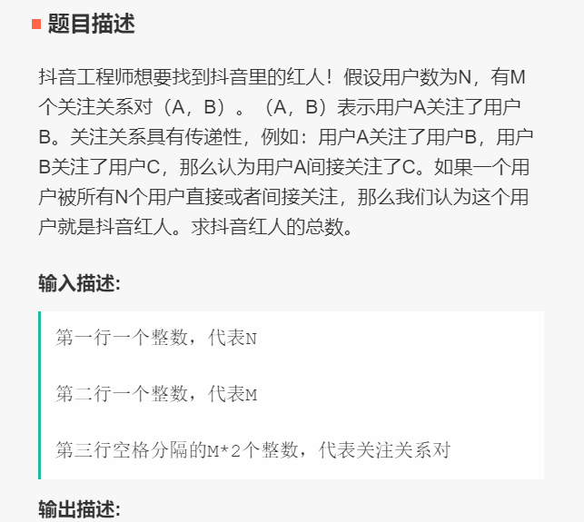
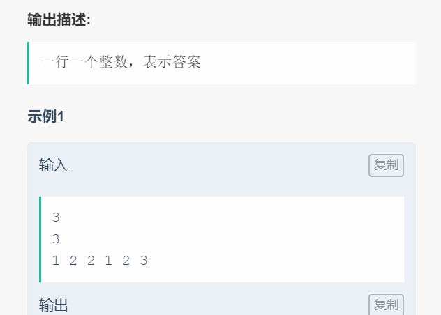

☰ 目录
006 障碍物棋盘游戏
链接和考点
| 栏目 | 详细 |
|---|---|
| 今日头条编程测试 | 2018.09.09 |
| 考点 | 矩阵，字符串，map |
| 难度 | Hard |
题意



分析
1- N 表示有N个人， 要被所有用户关注，也就是除了自己之外， 最长边的节点有N-1个；
2- N 和M值都比较大， 用 dfs 肯定是不够的。所以用栈实现dfs；
测试
这个A了？。 事后补充的。
参考答案
#include <iostream>
#include <vector>
#include <map>
using namespace std;
// 处理带障碍物 x 的列
void process( vector<vector<char>> & mat, int col, int start, int end){
int circle = 0;
for( int i = start; i < end; i ++){
if( mat[i][col] == 'o' )
circle++;
}
for( int i = start; i < end; i ++){
if(i < end-circle)
mat[i][col] = '.';
else
mat[i][col] = 'o';
}
}
// 处理没有障碍物的列
void processNoX( vector<vector<char>> & mat, int col, int start, int end){
for( int i = start; i < end; i ++){
mat[i][col] = '.';
}
}
int main() {
int row, col;
cin >> row;
cin >> col;
map<int, vector<int>> zhangai;
vector<vector<char>> mat(row, vector<char>(col));//这里，两个“>”间的空格是不可少的;
for( int i = 0; i < row; i ++ )
for( int j=0; j < col; j++ ){
char tmp;
cin >> tmp;
mat[i][j] = tmp;
if( tmp == 'x' ){
if( zhangai.find(j) == zhangai.end() ){
vector<int> tmp;
tmp.push_back(i);
zhangai[j] = tmp;
}
else{
zhangai[j].push_back(i);
}
}
}
int startCol = 0;
int curCol = 0;
for(auto it = zhangai.begin(); it!=zhangai.end(); it++){
vector<int>& currColx = it->second;
curCol = it -> first;
// 处理刚开始非障碍物的列
for(int i=startCol; i < curCol; i ++){
processNoX( mat, i, 0, row);
}
startCol = curCol+1; // 更新下一次开始的列
// 处理带障碍物的列，假设该列有多个障碍物 x
int start = 0;
for( int t = 0; t < currColx.size(); t++ ){
process(mat, curCol, start, currColx[t]);
start = currColx[t] + 1;
}
// 处理该列剩下可能不带障碍物的
if( currColx[currColx.size()-1] != (row-1)){
processNoX( mat, curCol, start, row);
}
}
// 处理障碍物后面可能还有不带障碍物的列
for(int i=startCol; i < col; i ++){
processNoX( mat, i, 0, row);
}
// 输出结果
for(int i=0; i < row; i++){
for(int j=0; j< col; j++)
cout << mat[i][j];
cout<<endl;
}
return 0;
}